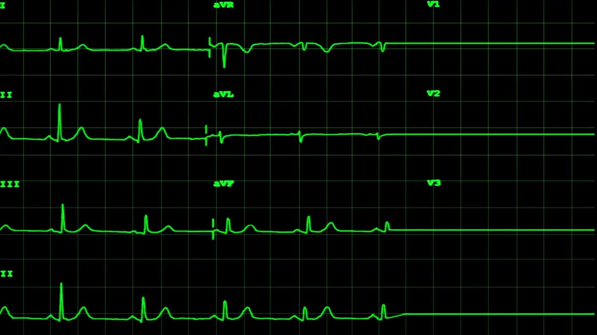
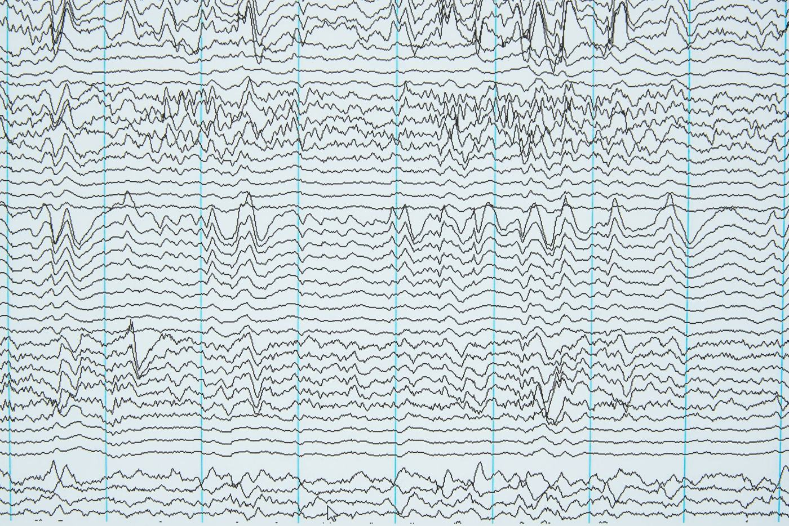

What correlation is
How one variable changes with another
Types of correlation
By direction
Positive: both variables move in the same direction, like height and weight.
Negative: they move in opposite directions, like a product's price and its demand.
By degree (strength)
Perfect (±1): an exact linear relationship; if X rises 10%, Y always rises 20%.
High, moderate or low: a partial relationship, depending on how close r is to ±1.
Zero: no relationship, like shoe size and intelligence.
Seeing it on a scatter plot
Plot each (X, Y) pair as a point. Points hugging a rising line show positive correlation, a falling line shows negative correlation, and a shapeless cloud shows no correlation.
Dial in a correlation
InteractiveDrag the slider to set r, or load an example. The 60 points are regenerated to have exactly that correlation.

Where correlation is used
- Sales and advertising spend.
- Temperature and electricity consumption.
- Customer satisfaction and retention.
- Economic indicators, such as income and expenditure.
Covariance
Do two variables vary together, and in which direction?
Covariance measures how two variables vary together: whether an increase in one goes with an increase or a decrease in the other. It captures the direction of the relationship, but not its strength or scale. If more advertising tends to bring more sales, covariance is positive; if higher prices reduce sales, it is negative.
| Cov(X, Y) | Interpretation | Relationship |
|---|---|---|
| > 0 | Positive | Both variables increase together |
| < 0 | Negative | One increases while the other decreases |
| = 0 | No covariance | No linear relationship (independent variables always have zero covariance, but zero covariance doesn't guarantee independence) |
Covariance, rectangle by rectangle
InteractiveEach point makes a rectangle with the mean point (x̄, ȳ). Teal rectangles (top-right or bottom-left) add to the covariance; rose ones subtract. Drag any point to see the numbers change.
Worked example
| Advertising X (₹1000) | Sales Y (₹1000) | x − x̄ | y − ȳ | Product |
|---|---|---|---|---|
| 2 | 40 | −1.33 | −16.67 | 22.22 |
| 3 | 50 | −0.33 | −6.67 | 2.22 |
| 5 | 80 | 1.67 | 23.33 | 38.89 |
With x̄ = 3.33 and ȳ = 56.67, the products add up to 63.33, so Cov(X, Y) = 63.33 ÷ (3 − 1) ≈ 31.67. It is positive: as advertising increases, sales increase too.
Properties of covariance
Symmetric
Scale dependent
Change the units and the covariance changes, so its size is hard to interpret.
Independence
If X and Y are independent, Cov(X, Y) = 0.
Link to variance
Uses in business and analytics
- Portfolio optimization: measuring how stocks move together.
- Risk management and diversification.
- Product relationships, such as demand for complementary goods.
- Understanding feature relationships before regression or PCA.
Pearson correlation
Covariance, standardized to a −1 to +1 scale
The Pearson correlation coefficient r measures the strength and direction of a linear relationship between two continuous variables. It is covariance divided by both standard deviations, which removes the units:
It always lies between −1 and +1. For the advertising example, r = 31.67 ÷ (1.53 × 20.82) ≈ 0.996: a nearly perfect positive relationship.
| Value of r | Type | Interpretation |
|---|---|---|
| +1 | Perfect positive | X and Y move exactly together |
| +0.7 to +0.9 | Strong positive | Both rise together closely |
| +0.3 to +0.6 | Moderate positive | A partial linear relationship |
| 0 | None | No linear relationship |
| −0.3 to −0.6 | Moderate negative | As one increases, the other tends to decrease |
| −0.7 to −0.9 | Strong negative | A strong inverse relationship |
| −1 | Perfect negative | One decreases exactly as the other increases |
Assumptions
Linearity
The relationship should be a straight line.
Continuous data
Both variables on an interval or ratio scale.
Normality
Each variable roughly normally distributed.
No extreme outliers
Outliers can distort r badly, as the next visual shows.
One point can change everything
InteractiveTwenty machines' running hours and output. Drag the orange point anywhere and watch r and the trend line react.
Applications
- Marketing: advertising budget and sales.
- Finance: correlation between stock returns, for diversification.
- Healthcare: a patient's age and recovery time.
- Operations: machine hours and output.
Pearson vs. Spearman
Straight lines vs. any consistent rise or fall
Pearson's r
For continuous, roughly normally distributed data. Measures linear relationships.
Spearman's ρ (rho)
For ranked or ordinal data, or data that isn't normal. Measures monotonic relationships using ranks.
where d is the difference between each pair's ranks and n the number of observations.
Kendall's tau
Another non-parametric measure, based on counting concordant and discordant pairs.
| Aspect | Pearson (r) | Spearman (ρ) |
|---|---|---|
| Data type | Continuous (interval or ratio) | Ordinal or ranked |
| Relationship | Linear | Monotonic (can be non-linear) |
| Sensitive to outliers | Yes | Less sensitive |
| Formula | Based on covariance | Based on rank differences |
Compare r and ρ on three datasets
InteractiveCorrelation is not causation
Association doesn't prove that one thing causes another
Correlation shows association, not cause and effect. Ice cream sales and drowning cases both rise in summer, so they are correlated, but ice cream doesn't cause drowning. A third variable, hot weather, drives both. Keep in mind too that correlation only measures linear relationships; non-linear patterns need other methods, such as regression or mutual information.
Find the hidden variable
InteractiveTwo years of monthly data for a beach town.
Outliers
Values far away from the rest

Why outliers occur
- Data entry or measurement error: a typo, a faulty sensor, or the wrong unit (cm vs. inches).
- Sampling error: data from a non-representative sample.
- Natural variation: genuinely extreme cases, such as very high earners.
- Experimental error: mistakes during collection or observation.
Effects of outliers
| Measure | Effect |
|---|---|
| Mean | Strongly affected: it can shift up or down |
| Median | Much less affected (robust) |
| Standard deviation and variance | Increase sharply |
| Correlation and regression | Can change direction or lose accuracy |
| Machine learning models | May overfit or mispredict |
Detecting outliers
IQR method
Values below Q1 − 1.5 × IQR or above Q3 + 1.5 × IQR are outliers. This is how box plots flag them.
Z-score
Values with |Z| above 3 (sometimes 2) are outliers. Works best for roughly normal data.
Modified Z-score
Uses the median and the median absolute deviation (MAD), so the outlier can't hide itself. Values with |M| above 3.5 are outliers.
Detect and handle outliers
InteractivePick a dataset and a detection method, then try a way of handling what it finds. You can also type your own values.
Handling outliers
| Method | When to use it |
|---|---|
| Remove | When caused by data entry or measurement errors |
| Cap or winsorize | Replace extreme values with boundary values or percentiles (such as the 1st and 99th) |
| Transform | Apply a log or square root to reduce their impact |
| Use robust models | Methods less sensitive to outliers, such as median regression or robust scaling |
| Investigate separately | Sometimes outliers are the insight: fraud, or a special customer segment |
Example: heights of 150, 152, 151, 153, 155 and 210 cm. The mean is about 161.8 cm, pulled up by the 210, while the median is 152.5 cm and barely notices it. The 210 cm value is an outlier.
Why it matters in business analytics
Finance
Detecting fraudulent transactions.
Healthcare
Spotting abnormal lab values.
Manufacturing
Catching machine malfunctions.
Marketing
Finding unusually high or low sales.
Session 9 in summary
- Correlation measures the direction and strength of a relationship; the scatter plot is the first thing to look at.
- Covariance gives the direction but depends on units; Pearson's r standardizes it to between −1 and +1.
- Pearson measures linear relationships in continuous data; Spearman uses ranks, handles monotonic curves and resists outliers.
- Correlation is not causation: a hidden third variable can create an association.
- Outliers distort the mean, standard deviation and correlation. Detect them with IQR fences or Z-scores, then decide whether to remove, cap, transform or investigate them.
Check your understanding
Ten questions covering this session. Pick an answer to see the explanation.